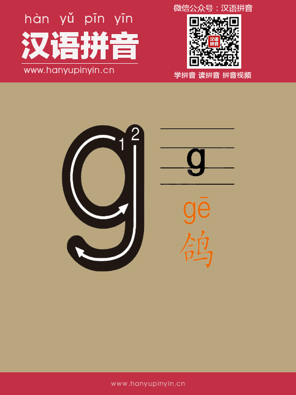
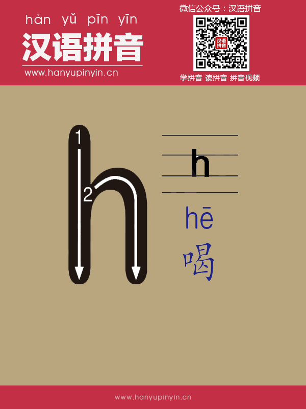
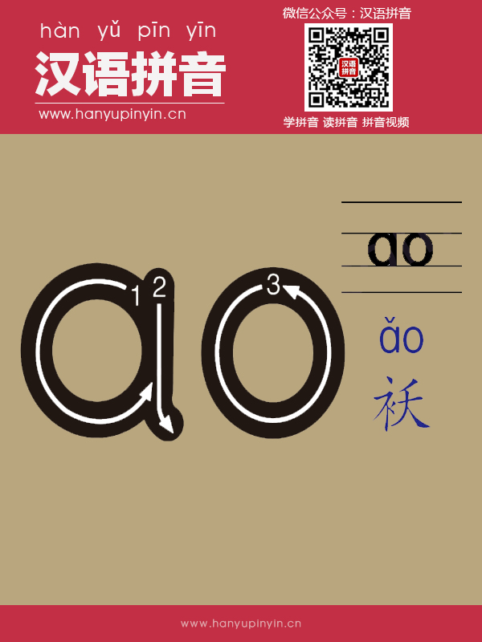
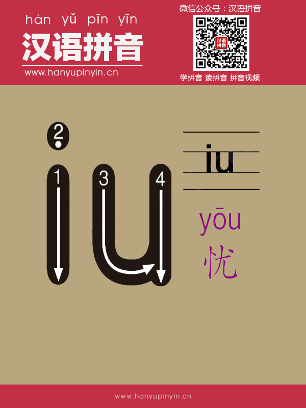
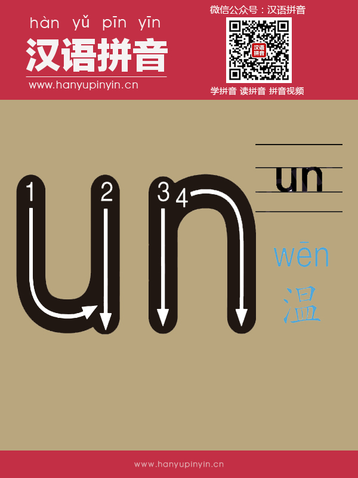

b
b：发音时，双唇紧闭，阻碍气流，然后双唇突然放开，让气流冲出，读音轻短。
p
p：发音时，双唇紧闭，阻碍气流，然后双唇突然放开，气流迸出成音。
m
m：发音时，双唇紧闭，舌后缩，气流从鼻腔出来，打开嘴，声带颤动
f
f：发音时，上齿触下唇形成窄缝，让气流从缝中挤出来，摩擦成声。
d
d：发音时，舌尖抵住上牙床，憋住气流后突然放开，气流从口腔迸出，爆发成音。
t
t：发音时，舌尖抵住上牙床，憋住气后，突然离开，气流从口中迸出。
n
n：发音时，舌尖抵住上牙床，气流从鼻腔通过，同时冲开舌尖的阻碍，声带颤动。
l
l：发音时，嘴唇稍开，舌尖抵住上牙床，声带颤动，气流从舌尖两边流出。
g
g：发音时，舌根前部抵住软腭阻碍气流，让气流冲破舌根的阻碍，爆发成音。

k
k：发音时，舌根前部，抵住上软腭，阻碍气流，让气流冲破舌根的阻碍，迸发成音。
h
h：发音时，舌根抬高，接近软腭，形成窄缝，气流从缝中挤出，摩擦成音。

j
j：发音时，舌尖抵住下门齿，舌面前部紧贴硬腭，气流从窄缝中冲出，摩擦成音。
q
q：发音时，舌面前部贴住硬腭，气流冲破舌根的阻碍，摩擦成音。
x
x：发音时，舌尖抵住下门齿，舌面前部抬高靠近硬腭，形成窄缝，气流从缝中挤出，摩擦成音。
zh
zh：发音时，舌尖上翘，抵住硬腭前部，有较弱的气流冲开舌尖阻碍，从缝中挤出，摩擦成音。
ch
ch：发音时，舌尖上翘，抵住硬腭前部，有较强的气流冲开舌尖阻碍，从缝中挤出，摩擦成音。
sh
sh：发音时，舌尖上翘，靠近硬腭前部，留出窄缝，气流从窄缝中挤出，摩擦成音。
r
r：发音时，舌尖上翘，靠近硬腭前部，留出窄缝，嗓子用力发音，气流从窄缝中挤出，摩擦成音，声带颤动。
z
z：发音时，舌尖抵住上门齿背，阻碍气流，让较弱的气流冲开舌尖阻碍，从窄缝中挤出，摩擦成音。
c
c：发音时，舌尖抵住上门齿背，阻碍气流，让较强的气流从缝中挤出，摩擦成音。
s
s：发音时，舌尖接近上门齿背，留出窄缝，气流从舌尖的窄缝中挤出，摩擦成音。
y
y：发音时，嘴微张成扁平状，舌尖抵住下齿龈，舌面抬高，靠近上硬腭，声带颤动。
w
w：发音时，嘴唇拢圆，突出成小孔，舌面后部隆起，声带颤动。
a
a：发音时，嘴唇自然张大，舌放平，舌头中间微隆，声带颤动。
o
o：发音时，嘴唇成圆形，微翘起，舌头向后缩，舌面后部隆起，舌居中，声带颤动。
e
e：发音时，嘴半开，舌位靠后，嘴角向两边展开成扁形，声带颤动。
i
i：发音时，嘴微张成扁平状，舌尖抵住下齿龈，舌面抬高，靠近上硬腭，声带颤动。
u
u：发音时，嘴唇拢圆，突出成小孔，舌面后部隆起，声带颤动。
ü
ü：发音时，嘴唇成圆形，接近闭拢，舌尖抵住下齿龈，舌面前部隆起，声带颤动。
ai
ai：发音时，先发 a 的音，然后滑向i，气流不中断，读音轻短。
ei
ei：发音时，先发 e 的音，然后滑向i，气流不中断，嘴角向两边展开。
ui
ui：发音时，u 的发音轻短，然后滑向 ei，嘴形由圆到扁。
ao
ao：发音时，先发 a 的音，然后舌尖后缩，舌根向上抬，嘴形拢成圆形，轻轻的滑向 o。

ou
ou：发音时，先发 o 的音，嘴唇渐收拢，舌根抬高，口型由大圆到小圆。
iu
iu：发音时，先发 i，然后向 ou 滑动，口型由扁到圆。

ie
ie：发音时，先发 i，再发e，气流不中断。
üe
üe：发音时，先发ü的音，然后向e滑动，口型由圆到扁。
er
er：发音时，舌位居中发 e 的音，然后舌尖向硬腭卷起，两个字母同时发音。
an
an：发音时，先发 a 的音，然后舌尖逐渐抬起，顶住上牙床发n的音。
en
en：发音时，先发 e 的音，然后舌面抬高,舌尖抵住上牙床，气流从鼻腔泄出，发n的音。
in
in：发音时，先发 i 的音，然后舌尖抵住下门齿背，舌面渐至硬腭，气流从鼻腔泄出，发n的音。
un
un：发音时，先发 u 的音，然后舌尖抵住上牙床，接着发n的音，气流从鼻腔泄出。

ün
ün：发音时，先发 ü ; 的音，然后舌头上抬，抵住上牙床，气流从鼻腔泄出，发n的音。
ang
ang：发音时，先发 a 的音，然后舌根抵住上软腭，气流从鼻腔泄出，发后鼻音尾ng的音。
eng
eng：发音时，先发 e 的音，然后舌尖抵住下牙床，舌根后缩抵住软腭发ng音，气流从鼻腔泄出。
ing
ing：发音时，舌尖触下齿龈，舌面隆起至硬腭，鼻腔共鸣成声。
ong
ong：发音时，先发 o 的音，然后舌根后缩抵住软腭，舌面隆起，嘴唇拢圆，鼻腔共鸣成声。